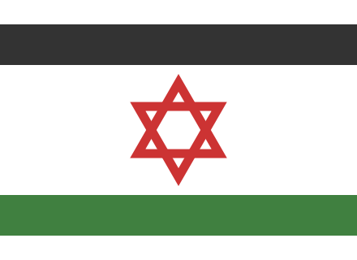

„Izrael je největší koncentrace židů na světě, kde se jeden snaží podfouknout druhýho“ Daúlát Israíl, česky přeložitelné jako Stát Izrael je malý státeček statečných Židů, kteří se brání přesile divokých Arabů.
Název státu Izrael pochází z češtiny, jeho kořen -sra- použili Arabové krátce po vzniku země, přejali ho do arabštiny a díky tomu se tak nový název rozšířil. V rámci politické korektnosti bylo s změněno na z, protože to nasraelo mnoho sympatizantů Izraele.
O vznik státu Izrael se velkou měrou přičinila řada významných osobností světových i nesvětových dějin: Adolf Hysterius Hitler, Benito Bevitore di Latte Plesciato Mussolini, feldkurát Jozef Tiso a v neposlední řadě velký přítel izraelského lidu, krásný a moudrý Jásir Arafat.
HL. město: Židigrad, Izraelci však žijí v domění, že jsou jím jiná města, například Jeruzalém atp.\ Premiér: Benjamin "Bibi" Netanjahu (premiér a ministr zahraničí, zdravotnictví, propagandy a místního rozvoje v jedné osobě)